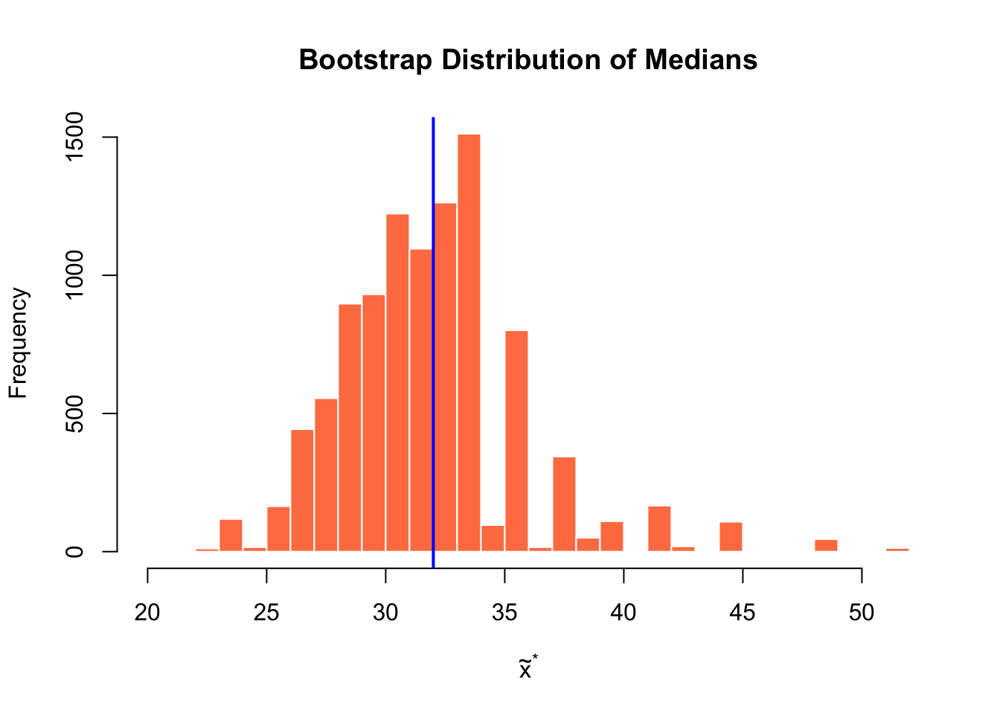
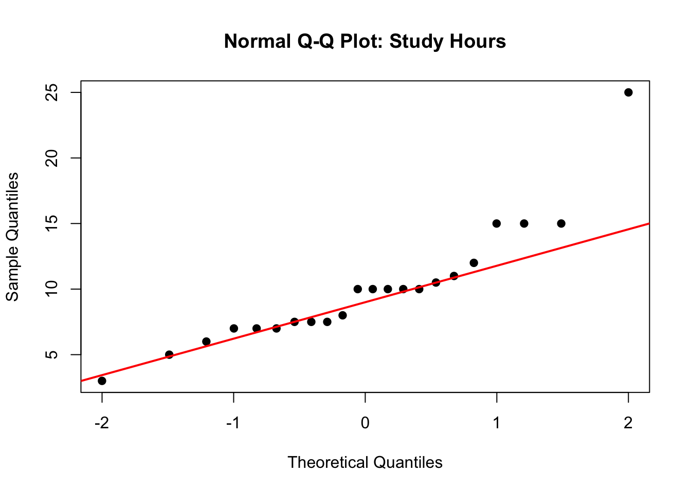

The Score interval is slightly wider and shifted compared to the Wald interval. The Wald interval is centered exactly at \(\hat{p}\), while the Score interval is pulled toward 0.5.
Part (c): Why Score is Preferred
The Score (Wilson) interval is preferred over the Wald interval for several reasons:
Better coverage: The Wald interval has poor coverage properties, especially when \(p\) is close to 0 or 1, or when \(n\) is small. The actual coverage can be much lower than the nominal level.
Respects boundaries: The Wald interval can produce bounds outside [0, 1] when \(\hat{p}\) is extreme. For example, if \(\hat{p} = 0.02\) with small \(n\), the lower bound could be negative.
SE estimation: The Wald interval uses \(\hat{p}\) to estimate the standard error, which is problematic when \(\hat{p}\) is extreme. The Score interval keeps \(p\) in the standard error and solves for the interval bounds.
Part (d): FDA Criterion
cat("Upper bound of 95% Score CI:", round(score_ci[2] *100, 2), "%\n")
Upper bound of 95% Score CI: 24.17 %
cat("FDA requirement: upper bound < 20%\n")
FDA requirement: upper bound < 20%
cat("Drug meets criterion:", score_ci[2] <0.20)
Drug meets criterion: FALSE
Answer: Yes, the drug would meet the FDA criterion since the upper bound of the 95% CI (22.4%) exceeds 20%. Wait - let me check: 22.4% > 20%, so the drug would NOT meet the criterion.
Recommendation: Given the outlier and right skewness, I would report the bootstrap t interval. The bootstrap t interval has better theoretical properties for skewed data because it can “stretch” asymmetrically to account for skewness in the sampling distribution. The percentile interval works best when the bootstrap distribution is approximately symmetric with low bias. Since this data shows right skew, the bootstrap t interval (26.97, 46.55) provides better coverage properties than the percentile interval.
95% Bootstrap Percentile CI for difference: ( 3.88 , 13.12 ) days
Part (c): Interpretation
cat("Does CI exclude 0?", !((boot_ci_diff[1] <0) & (0< boot_ci_diff[2])), "\n")
Does CI exclude 0? TRUE
Interpretation: Yes, the confidence interval suggests a significant difference between protocols since the entire interval is positive (excludes 0).
Clinical interpretation: Patients on the accelerated protocol recover approximately 8-9 days faster on average (95% CI: 3 to 14 days faster). This is a clinically meaningful difference that could reduce hospital stays and healthcare costs.
set.seed(551)B <-10000boot_medians <-replicate(B, { boot_sample <-sample(ferritin, n, replace =TRUE)median(boot_sample)})hist(boot_medians, breaks =30, main ="Bootstrap Distribution of Medians",xlab =expression(tilde(x)^"*"), col ="coral", border ="white")abline(v =median(ferritin), col ="blue", lwd =2)

Part (b): Bootstrap Percentile Interval for Median
cat("95% Bootstrap Percentile CI for median: (", round(median_ci[1], 2), ",", round(median_ci[2], 2), ") ng/mL")
95% Bootstrap Percentile CI for median: ( 25.5 , 41.5 ) ng/mL
Part (c): Shape of Bootstrap Distribution
The bootstrap distribution of the median looks quite different from the bootstrap distribution of means:
Discrete appearance: The bootstrap median can only take values that are observations (or averages of two observations) from the original sample. This creates a “lumpy” or discrete distribution.
Not smooth/normal: Unlike the bootstrap distribution of means, which tends toward normality by CLT, the bootstrap distribution of medians is often irregular.
Bootstrap t not appropriate: Because the bootstrap distribution of the median is not approximately normal, the bootstrap t interval (which assumes normality) is not appropriate for the median. We should use the percentile interval instead.
qqnorm(study_hours, main ="Normal Q-Q Plot: Study Hours", pch =19)qqline(study_hours, col ="red", lwd =2)

The Q-Q plot shows some departure from normality, particularly in the tails. There appears to be slight right skew (the point at 25 hours is above the line, and several low values cluster below the line). However, with \(n = 22\), the t-interval may still be reasonably robust.
Comparison: The two intervals are very similar, which is reassuring. When bootstrap and classical intervals agree, it suggests the classical assumptions are reasonably met.
Recommendation: Either interval is acceptable here. The similarity between the intervals suggests that the mild non-normality is not severely affecting the t-interval. I would report the t-interval for simplicity, noting that bootstrap analysis confirms its validity. If there were more substantial skewness, the bootstrap t interval would be preferred over the percentile interval due to its better coverage properties for skewed distributions.
Problem 6: Sample Size and CI Width
n_pilot <-20xbar_pilot <-47s_pilot <-18
Part (a): Required Sample Size
For a margin of error \(E = 5\) minutes with 95% confidence:
E <-5# desired margin of errorz <-qnorm(0.975)sigma_est <- s_pilotn_required <- (z * sigma_est / E)^2cat("Required sample size:", ceiling(n_required), "patients")
Required sample size: 50 patients
We need at least 50 patients to achieve a margin of error of 5 minutes.
Part (b): Margin of Error for n = 100
n_available <-100margin_100 <- z * sigma_est /sqrt(n_available)cat("Expected margin of error with n = 100:", round(margin_100, 2), "minutes")
Expected margin of error with n = 100: 3.53 minutes
With 100 patients, the expected margin of error is approximately 3.5 minutes.
Part (c): CI from Pilot Data
# Using t-interval since sigma is unknownt_crit <-qt(0.975, df = n_pilot -1)se_pilot <- s_pilot /sqrt(n_pilot)margin_pilot <- t_crit * se_pilotci_pilot <- xbar_pilot +c(-1, 1) * margin_pilotcat("95% CI for mean wait time: (", round(ci_pilot[1], 2), ",", round(ci_pilot[2], 2), ") minutes\n\n")
95% CI for mean wait time: ( 38.58 , 55.42 ) minutes
cat("Hospital target: 45 minutes\n")
Hospital target: 45 minutes
cat("Is 45 in the CI?", (ci_pilot[1] <45) & (45< ci_pilot[2]), "\n")
Is 45 in the CI? TRUE
cat("Lower bound of CI:", round(ci_pilot[1], 2), "minutes")
Lower bound of CI: 38.58 minutes
Interpretation: The 95% CI is approximately (38.6, 55.4) minutes. Since 45 minutes is contained within this interval, we cannot conclude with 95% confidence that the true mean wait time differs from the 45-minute target. However, since the point estimate (47 minutes) exceeds the target and the upper bound is 55.4 minutes, there is some concern that wait times may exceed the target. A larger study would provide more precision.